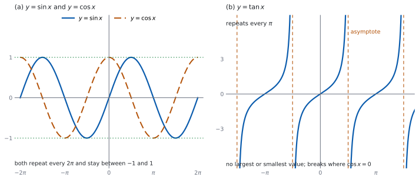
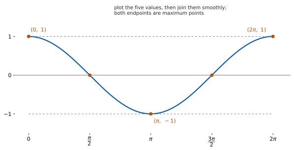
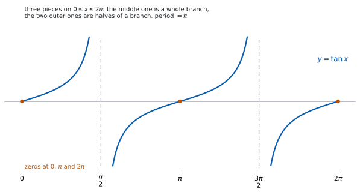

SL 3.7a — The circular functions and their graphs（三角関数とそのグラフ）
- \(y = \sin x\)、\(y = \cos x\)、\(y = \tan x\) の形をかける。
- amplitude（振幅）と period（周期）が言える。
- \(\sin\) と \(\cos\) が \(\dfrac{\pi}{2}\) ずれていることを使える。
- \(y = \tan x\) の asymptote（漸近線）の位置が言える。
- 各グラフの定義域と値域が言える。
The idea
1. \(y = \sin x\) のグラフ
単位円の点 \((\cos x,\ \sin x)\) を思い出してください（SL 3.5a）。\(x\) を \(0\) から増やしていくと、\(y\) 座標の動きがそのまま \(y = \sin x\) のグラフになります。
図 1 の (a) の実線がそれです。\(0\) から始まって上がり、下がり、また上がる、なめらかな波です。
\(1\) 周すると同じ形にもどります。 \(\sin(x + 2\pi) = \sin x\) だからです（SL 3.5a）。だからグラフは、幅 \(2\pi\) の同じ形が左右にくり返される形になります。
値は \(-1\) 以上 \(1\) 以下です。単位円の \(y\) 座標だからです（SL 3.5a）。
2. \(y = \cos x\) のグラフ
こんどは\(x\) 座標の動きです。図 1 の (a) の破線がそれです。
\(x = 0\) のとき点は \((1,\ 0)\) なので、グラフは \(1\) から始まります。あとは \(\sin\) と同じで、幅 \(2\pi\) でくり返し、値は \(-1\) 以上 \(1\) 以下です。
\(\cos(-x) = \cos x\) なので、\(y\) 軸について左右対称です。\(\sin(-x) = -\sin x\) のほうは、原点について点対称になります。
3. \(\sin\) と \(\cos\) のずれ
\(2\) つのグラフは、形が同じで、位置が \(\dfrac{\pi}{2}\) だけずれているだけです。式で書くと
\[ \cos x = \sin\left(x + \frac{\pi}{2}\right) \tag{1}\]
です。\(\sin\) のグラフを左に \(\dfrac{\pi}{2}\) ずらすと \(\cos\) のグラフになる、ということです（理由は Why it works）。
どちら向きにずらすかで迷ったら、\(x = 0\) を見てください。 \(\cos 0 = 1\) で山の頂上、\(\sin 0 = 0\) で真ん中です。\(\sin\) の山は \(x = \dfrac{\pi}{2}\) にあるので、それを \(x = 0\) に持ってくるには左へ動かします。
4. amplitude と period
- amplitude（振幅）… 波の形のグラフで、（\(1\) 周期ぶんの最大値 \(-\) \(1\) 周期ぶんの最小値）\(\div 2\)。上下の振れ幅の半分です。
- period（周期）… すべての \(x\) で \(f(x + p) = f(x)\) となる、いちばん小さい正の数 \(p\)。同じ形がくり返される幅のうち、いちばん狭いものです。
\(y = \sin x\) と \(y = \cos x\) では、最大値 \(1\)、最小値 \(-1\) なので
\[ \text{amplitude} = \frac{1 - (-1)}{2} = 1, \qquad \text{period} = 2\pi \tag{2}\]
です。
この項目は公式集にありません。 amplitude と period の求め方も、\(3\) つのグラフの形も印刷されていないので、覚える必要があります。
いまは最大値も \(1\)、amplitude も \(1\) なので同じに見えます。上下にずらしたグラフでは、\(2\) つはちがう値になります（SL 3.7b で扱います）。
amplitude は振れ幅の半分、と覚えてください。
5. \(y = \tan x\) のグラフ
\(\tan x = \dfrac{\sin x}{\cos x}\) なので（SL 3.5a）、\(\cos x = 0\) のところで値がありません。そこがグラフの切れ目です。図 1 の (b) を見てください。
- 切れ目は …、\(x = -\dfrac{\pi}{2}\)、\(x = \dfrac{\pi}{2}\)、\(x = \dfrac{3\pi}{2}\)、… と、\(\pi\) ごとに左右へ限りなく並びます。まとめて書けば \(x = \dfrac{\pi}{2} + n\pi\)（\(n\) は整数）です。そこに縦の asymptote（漸近線）を、破線でかき入れます。
- period は \(\pi\) です。\(\tan(x + \pi) = \tan x\) でした（SL 3.5a）。\(2\pi\) ではありません。
- 最大値も最小値もありません。 値はいくらでも大きく、いくらでも小さくなります。だから amplitude もありません。
- 切れ目と切れ目のあいだで、グラフは下から上へ切れ目なくつながって動くので、どんな実数もちょうど \(1\) 回ずつとります。だから値域はすべての実数です。
\(\tan x = 0\) になるのは \(\sin x = 0\) のとき、つまり \(x = 0\)、\(\pm\pi\)、\(\pm 2\pi\)、… です。
6. かくときの手順
曲線を先にかかず、点を先に打ちます。
- 軸に \(\dfrac{\pi}{2}\) きざみの目盛りを打つ（度なら \(90°\) きざみ）。
- 切りのよい点を打つ。\(\cos\) なら \(x = 0,\ \dfrac{\pi}{2},\ \pi,\ \dfrac{3\pi}{2},\ 2\pi\) の \(5\) 点です。
- \(\tan\) なら、先に漸近線を破線で引く。
- 点をなめらかにつなぐ。山と谷はとがらせません。
\(y = \cos x\) を \(0 \le x \le 2\pi\) でかくなら、打つ点は 表 1 です。
| \(x\) | \(0\) | \(\dfrac{\pi}{2}\) | \(\pi\) | \(\dfrac{3\pi}{2}\) | \(2\pi\) |
|---|---|---|---|---|---|
| \(\cos x\) | \(1\) | \(0\) | \(-1\) | \(0\) | \(1\) |
7. 定義域と値域
| 関数 | 定義域 | 値域 | period |
|---|---|---|---|
| \(y = \sin x\) | すべての実数 | \(-1 \le y \le 1\) | \(2\pi\) |
| \(y = \cos x\) | すべての実数 | \(-1 \le y \le 1\) | \(2\pi\) |
| \(y = \tan x\) | \(x \ne \dfrac{\pi}{2} + n\pi\)（\(n\) は整数） | すべての実数 | \(\pi\) |
問題文が範囲を指定したら、その中だけをかきます。 「\(0 \le x \le 2\pi\)」と書いてあるのに \(2\pi\) より先までかくと、聞かれていないことを答えたことになります。
TI-Nspire の Graphs 画面で f1(x)=sin(x) のように入れます。Angle の設定は Radian にしておきます（SL 3.4）。
窓の設定を自分で決めてください。 初期設定のままだと横が \(-10\) から \(10\) で、\(\pi\) の目盛りになりません。menu → Window/Zoom → Zoom-Trig を使うと、\(\dfrac{\pi}{2}\) きざみの窓になります。
Paper 1 では使えません。 手でかけるように、点を打つ手順を身につけてください。

Why it works
なぜ、\(\sin\) のグラフは波になるのでしょうか。 単位円を反時計回りに一定の速さで回る点を考えます。その点の \(y\) 座標を、時間 \(x\) に対して記録したものが \(y = \sin x\) のグラフです。
点が上へ行くとき \(y\) 座標は増え、下へ行くとき減ります。上の端と下の端では向きが変わるので、そこがグラフの山と谷になります。円を一周すると点はもとにもどるので、\(2\pi\) ごとに同じ形がくり返されます。
なぜ、\(\cos x = \sin\left(x + \dfrac{\pi}{2}\right)\) なのでしょうか。 角 \(x\) の点を \((a,\ b)\) とします。定義から \(a = \cos x\)、\(b = \sin x\) です（SL 3.5a）。角を \(\dfrac{\pi}{2}\) 増やすことは、点を反時計回りに \(\dfrac{1}{4}\) 回転させることです。
\(\dfrac{1}{4}\) 回転で、点 \((a,\ b)\) は \((-b,\ a)\) に写ります。\(x\) 軸の正の向きにある点 \((1,\ 0)\) が \(y\) 軸の正の向き \((0,\ 1)\) に写ることを見れば、向きが確かめられます。
写った点は角 \(x + \dfrac{\pi}{2}\) の点なので、その \(y\) 座標は \(\sin\left(x + \dfrac{\pi}{2}\right)\) です。一方、写った点は \((-b,\ a)\) なので、\(y\) 座標は \(a\) です。つまり
\[ \sin\left(x + \frac{\pi}{2}\right) = a = \cos x \]
となり、式 1 が出ます。
なぜ、\(\tan\) の period は \(\pi\) なのでしょうか。 \(\tan(x + \pi) = \tan x\) が成り立つからです（SL 3.5a）。\(\pi\) 進むと点は原点について反対側へ行き、\(x\) 座標も \(y\) 座標も符号が変わりますが、比を取ると符号が消えます。
だから \(\tan\) のグラフは、幅 \(\pi\) の同じ形のくり返しです。\(\sin\) や \(\cos\) の半分の幅で、もうくり返しています。
なぜ、漸近線ができるのでしょうか。 \(x\) が \(\dfrac{\pi}{2}\) に近づくと \(\cos x\) は \(0\) に近づき、\(\sin x\) は \(1\) に近づきます。分母が \(0\) に近い小さい数になるので、商の大きさはいくらでも大きくなります。
左から近づくときは \(\cos x > 0\) で商は正、右から近づくときは \(\cos x < 0\) で商は負です。だからグラフは、漸近線の左で上へ、右で下から立ち上がります。
Worked examples
問題文は英語です。意味が理解できなかったら、問題文の下の「日本語訳」を開いてください。解説は日本語です。
例題も演習も、すべて電卓なしで解けます。 Paper 1 のつもりで解いてください。
例題 1 The function \(f(x) = \sin x\) has domain \(0 \le x \le 2\pi\).
(a) Write down the amplitude of \(f\).
(b) Write down the period of \(f\).
(c) Write down the coordinates of the maximum point of \(f\).
(d) Explain why \(f(x) = 0\) at exactly three values of \(x\) in this domain.
日本語訳
関数 \(f(x) = \sin x\) の定義域は \(0 \le x \le 2\pi\) です。
(a) \(f\) の amplitude を書きなさい。
(b) \(f\) の period を書きなさい。
(c) \(f\) の最大点の座標を書きなさい。
(d) この定義域で \(f(x) = 0\) となる \(x\) がちょうど \(3\) 個である理由を説明しなさい。
(a) 最大値 \(1\)、最小値 \(-1\) なので（式 2）
\[ \text{amplitude} = \frac{1 - (-1)}{2} = 1 \]
(b) period は \(y = \sin x\) という関数そのものの性質です。\(0 \le x \le 2\pi\) は、そのくり返し \(1\) 個ぶんを切り取った範囲にすぎないので、幅は \(2\pi\) のままです。
\[ \text{period} = 2\pi \]
(c) 山の頂上は \(x = \dfrac{\pi}{2}\) です。
\[ \left(\frac{\pi}{2},\ 1\right) \]
(d) Explain why なので、英語で理由を書きます。
試験ではこう書く
On the unit circle, \(\sin x\) is the \(y\)-coordinate, and this is zero exactly when the point lies on the \(x\)-axis, that is at \(x = 0\) and \(x = \pi\) within one turn. Adding \(2\pi\) gives \(x = 2\pi\), which is still in the domain. No other angle in \(0 \le x \le 2\pi\) puts the point on the \(x\)-axis, so there are exactly three values.
（単位円では \(\sin x\) は \(y\) 座標で、これが \(0\) になるのは点が \(x\) 軸の上にあるとき、つまり \(1\) 周のうち \(x = 0\) と \(x = \pi\) のときである。\(2\pi\) を足すと \(x = 2\pi\) で、これも定義域に入る。\(0 \le x \le 2\pi\) で点が \(x\) 軸に来る角はほかにないので、ちょうど \(3\) 個である、という意味です。）
検算（(a) について）。 中心線からの高さで見ます。 このグラフの中心線は \(y = 0\) です。山の頂上 \(y = 1\) までが \(1\)、谷の底 \(y = -1\) までも \(1\) で、上下が同じ高さです ✓ 引き算を通らない見方でも \(1\) になりました。
検算（(c) について）。 表の値で見ます。 \(\sin\dfrac{\pi}{2} = 1\) です（SL 3.5b）。最大値 \(1\) をとる点なので、たしかに山の頂上です ✓
検算（(d) について）。 グラフの形で見ます。 \(0\) から \(2\pi\) までで、グラフは \(x\) 軸を「始まり・真ん中・終わり」の \(3\) か所で通ります ✓ 山を \(1\) つ、谷を \(1\) つ通るので、その前後で \(3\) 回です。
(a) \[\text{amplitude} = 1\]
(b) \[\text{period} = 2\pi\]
(c) \[\left(\frac{\pi}{2},\ 1\right)\]
(d) \(\sin x\) is the \(y\)-coordinate on the unit circle, which is \(0\) only on the \(x\)-axis: at \(x = 0\), \(\pi\) and \(2\pi\) in this domain.
例題 2 The function \(g(x) = \cos x\) has domain \(-\pi \le x \le \pi\).
(a) Write down the maximum value and the minimum value of \(g\).
(b) Write down the coordinates of the points where the graph of \(g\) crosses the \(x\)-axis.
(c) Write down the coordinates of the point where the graph of \(g\) crosses the \(y\)-axis.
(d) Explain why the graph of \(g\) is symmetric about the \(y\)-axis.
日本語訳
関数 \(g(x) = \cos x\) の定義域は \(-\pi \le x \le \pi\) です。
(a) \(g\) の最大値と最小値を書きなさい。
(b) \(g\) のグラフが \(x\) 軸と交わる点の座標を書きなさい。
(c) \(g\) のグラフが \(y\) 軸と交わる点の座標を書きなさい。
(d) \(g\) のグラフが \(y\) 軸について対称である理由を説明しなさい。
(a) 単位円の \(x\) 座標なので、\(-1\) 以上 \(1\) 以下です（表 2）。この定義域には \(x = 0\) と \(x = \pm\pi\) が入っているので、どちらもとります。
\[ \text{maximum} = 1, \qquad \text{minimum} = -1 \]
(b) \(\cos x = 0\) になるのは、点が \(y\) 軸の上にあるときです。
\[ \left(-\frac{\pi}{2},\ 0\right), \qquad \left(\frac{\pi}{2},\ 0\right) \]
(c) \(x = 0\) を入れます。\(\cos 0 = 1\) です。
\[ (0,\ 1) \]
(d) Explain why なので、英語で理由を書きます。
試験ではこう書く
For any \(x\), the points on the unit circle at angles \(x\) and \(-x\) are reflections of each other in the \(x\)-axis, so they have the same \(x\)-coordinate. Hence \(\cos(-x) = \cos x\), so \(g(-x) = g(x)\) for every \(x\) in the domain, and the domain itself is symmetric about \(0\). A graph with \(g(-x) = g(x)\) is symmetric about the \(y\)-axis.
（どんな \(x\) でも、角 \(x\) と角 \(-x\) にある単位円上の点は \(x\) 軸について互いに折り返したものなので、\(x\) 座標が等しい。よって \(\cos(-x) = \cos x\) となり、定義域のどの \(x\) でも \(g(-x) = g(x)\) である。定義域そのものも \(0\) について対称である。\(g(-x) = g(x)\) をみたすグラフは \(y\) 軸について対称である、という意味です。）
検算（(a) について）。 端の値を見ます。 \(\cos(-\pi) = \cos\pi = -1\) で、最小値をとっています ✓ \(\cos 0 = 1\) で最大値です。
検算（(b) について）。 対称性で見ます。 \(2\) つの交点は \(x = \pm\dfrac{\pi}{2}\) で、\(y\) 軸から同じだけ離れています ✓ (d) の対称性と合っています。
検算（(c) について）。 表の値で見ます。 \(\cos 0 = 1\) です（SL 3.5b）。表 1 の \(1\) 列目とも合っています ✓
(a) \[\text{maximum} = 1, \qquad \text{minimum} = -1\]
(b) \[\left(-\frac{\pi}{2},\ 0\right), \quad \left(\frac{\pi}{2},\ 0\right)\]
(c) \[(0,\ 1)\]
(d) \(\cos(-x) = \cos x\) for every \(x\), and the domain is symmetric about \(0\), so the graph is symmetric about the \(y\)-axis.
例題 3 The function \(h(x) = \tan x\) is considered on the domain \(0 \le x \le 2\pi\), excluding the values at which it is undefined.
(a) Write down the period of \(h\).
(b) Write down the equations of the vertical asymptotes of the graph of \(h\) in this domain.
(c) Write down the values of \(x\) in this domain at which the graph crosses the \(x\)-axis.
(d) Explain why the graph of \(h\) has a vertical asymptote at \(x = \dfrac{\pi}{2}\).
日本語訳
関数 \(h(x) = \tan x\) を、定義域 \(0 \le x \le 2\pi\)（値をもたない \(x\) は除く）で考えます。
(a) \(h\) の period を書きなさい。
(b) この定義域における、\(h\) のグラフの垂直漸近線の式を書きなさい。
(c) この定義域で、グラフが \(x\) 軸と交わる \(x\) の値を書きなさい。
(d) \(x = \dfrac{\pi}{2}\) でグラフが垂直漸近線をもつ理由を説明しなさい。
(a) \(\tan(x + \pi) = \tan x\) です（第 5 節）。
\[ \text{period} = \pi \]
(b) \(\cos x = 0\) になる \(x\) を探します。
\[ x = \frac{\pi}{2}, \qquad x = \frac{3\pi}{2} \]
(c) \(\tan x = 0\) になるのは \(\sin x = 0\) のときです。
\[ x = 0, \qquad x = \pi, \qquad x = 2\pi \]
(d) Explain why なので、英語で理由を書きます。
試験ではこう書く
By definition \(\tan x = \dfrac{\sin x}{\cos x}\). At \(x = \dfrac{\pi}{2}\) the point on the unit circle is \((0,\ 1)\), so \(\cos x = 0\) and \(\sin x = 1\). As \(x\) approaches \(\dfrac{\pi}{2}\) the denominator approaches \(0\) while the numerator approaches \(1\), so the size of the quotient grows without bound. The graph therefore has a vertical asymptote there.
（定義により \(\tan x = \dfrac{\sin x}{\cos x}\) である。\(x = \dfrac{\pi}{2}\) では単位円上の点が \((0,\ 1)\) なので \(\cos x = 0\)、\(\sin x = 1\) である。\(x\) が \(\dfrac{\pi}{2}\) に近づくと分母は \(0\) に近づき、分子は \(1\) に近づくので、商の大きさはいくらでも大きくなる。よってそこに垂直漸近線ができる、という意味です。）
検算（(a) について）。 グラフの形で見ます。 \(0\) から \(2\pi\) までに、同じ形が \(2\) つ入っています ✓ \(2\pi \div 2 = \pi\) です。
検算（(b) について）。 \(\cos\) のグラフと見くらべます。 \(y = \cos x\) が \(x\) 軸を横切るのが \(x = \dfrac{\pi}{2}\) と \(x = \dfrac{3\pi}{2}\) です ✓ そこが \(\tan\) の切れ目です。
検算（(c) について）。 値を入れます。 \(\tan\pi = \dfrac{\sin\pi}{\cos\pi} = \dfrac{0}{-1} = 0\) ✓ ついでに \(x = \dfrac{\pi}{2}\) を入れると分母が \(0\) なので、そこは切れ目であって \(x\) 切片ではないと分かります。
(a) \[\text{period} = \pi\]
(b) \[x = \frac{\pi}{2}, \quad x = \frac{3\pi}{2}\]
(c) \[x = 0, \quad \pi, \quad 2\pi\]
(d) \(\tan x = \dfrac{\sin x}{\cos x}\) and \(\cos\dfrac{\pi}{2} = 0\) with \(\sin\dfrac{\pi}{2} = 1\), so the quotient grows without bound near \(x = \dfrac{\pi}{2}\).
例題 4 The graphs of \(y = \sin x\) and \(y = \cos x\) are drawn on the same axes for \(0 \le x \le 2\pi\).
(a) Write down the range of \(y = \sin x\).
(b) Write down the coordinates of the minimum point of \(y = \sin x\) in this interval.
(c) Find the number of points at which the two graphs meet in this interval.
(d) Explain why there is no value of \(x\) for which \(\sin x\) and \(\cos x\) are both equal to \(1\).
日本語訳
\(y = \sin x\) と \(y = \cos x\) のグラフを、\(0 \le x \le 2\pi\) で同じ軸上にかきます。
(a) \(y = \sin x\) の値域を書きなさい。
(b) この区間での \(y = \sin x\) の最小点の座標を書きなさい。
(c) この区間で \(2\) つのグラフが交わる点の個数を求めなさい。
(d) \(\sin x\) と \(\cos x\) がともに \(1\) になる \(x\) が存在しない理由を説明しなさい。
(a) 単位円の \(y\) 座標です（表 2）。
\[ -1 \le y \le 1 \]
(b) 谷の底は \(x = \dfrac{3\pi}{2}\) です。
\[ \left(\frac{3\pi}{2},\ -1\right) \]
(c) \(\sin x = \cos x\) になるのは、単位円の点で \(y\) 座標と \(x\) 座標が等しいとき、つまり点が直線 \(y = x\) の上にあるときです（SL 3.5a）。単位円と直線 \(y = x\) が交わるのは \(2\) 点で、\(0 \le x \le 2\pi\) にはその \(2\) 点がちょうど \(1\) 回ずつ現れます。
\[ 2 \]
(d) Explain why なので、英語で理由を書きます。
試験ではこう書く
For every \(x\) the identity \(\cos^{2}x + \sin^{2}x = 1\) holds. If \(\sin x = 1\) and \(\cos x = 1\) at the same value of \(x\), the left-hand side would be \(1 + 1 = 2\), which is not \(1\). Hence no such \(x\) exists. Equivalently, on the unit circle the point \((1,\ 1)\) is not on the circle.
（どんな \(x\) でも \(\cos^{2}x + \sin^{2}x = 1\) が成り立つ。同じ \(x\) で \(\sin x = 1\) かつ \(\cos x = 1\) なら、左辺は \(1 + 1 = 2\) となり \(1\) ではない。よってそのような \(x\) は存在しない。同じことは、点 \((1,\ 1)\) が単位円の上にないことからも分かる、という意味です。）
検算（(b) について）。 山の位置とくらべます。 山は \(x = \dfrac{\pi}{2}\) でした。谷はその半周あとなので \(\dfrac{\pi}{2} + \pi = \dfrac{3\pi}{2}\) ✓
検算（(c) について）。 表の値で見ます。 \(\sin\dfrac{\pi}{4} = \cos\dfrac{\pi}{4} = \dfrac{\sqrt{2}}{2}\)、\(\sin\dfrac{5\pi}{4} = \cos\dfrac{5\pi}{4} = -\dfrac{\sqrt{2}}{2}\) です（SL 3.5b、第 3 節）。この \(2\) か所で実際に値が一致します ✓
検算（(d) について）。 点で確かめます。 \((1,\ 1)\) は原点から \(\sqrt{2}\) の距離にあり、\(1\) ではありません ✓ だから単位円の上にありません。
(a) \[-1 \le y \le 1\]
(b) \[\left(\frac{3\pi}{2},\ -1\right)\]
(c) \[2\]
(d) \(\cos^{2}x + \sin^{2}x = 1\), but \(1^{2} + 1^{2} = 2\), so \(\sin x\) and \(\cos x\) cannot both be \(1\).
Common errors
\(\pi\) です（第 5 節）。\(\sin\) や \(\cos\) の半分で、もうくり返しています。
\(\tan\) のグラフでは、先に破線で漸近線を引いてから曲線をかきます（第 6 節）。
\(1\) つのグラフの中では、どちらかにそろえます（SL 3.4）。
\(\cos\) は \(\sin\) を左へ \(\dfrac{\pi}{2}\) 動かしたものです（式 1）。\(x = 0\) での値で確かめてください。
\(\sin\) と \(\cos\) のグラフはなめらかです。折れ線にしないでください。
問題文が \(0 \le x \le 2\pi\) と言っていたら、そこで止めます（第 7 節）。
Exercises
各問題に、折りたたみが \(3\) つ付いています。日本語訳、解答例（答案用紙に書くべきこと。英語です）、解説（なぜそうなるか。日本語です）。
まず自分で解いて、次に解答例と見くらべてください。解説は、合わなかったときだけ開けば十分です。
1 Copy and complete a table of values of \(y = \cos x\) at \(x = 0\), \(\dfrac{\pi}{2}\), \(\pi\), \(\dfrac{3\pi}{2}\) and \(2\pi\), and hence sketch the graph of \(y = \cos x\) for \(0 \le x \le 2\pi\), marking the coordinates of the maximum and minimum points.
日本語訳
\(x = 0\)、\(\dfrac{\pi}{2}\)、\(\pi\)、\(\dfrac{3\pi}{2}\)、\(2\pi\) における \(y = \cos x\) の値の表をつくり、それをもとに \(0 \le x \le 2\pi\) で \(y = \cos x\) のグラフをかきなさい。最大点と最小点の座標も書き入れなさい。
Values \(1\), \(0\), \(-1\), \(0\), \(1\); plot these five points and join them with a smooth curve, stopping at \(x = 2\pi\).
\[\text{maximum points } (0,\ 1) \text{ and } (2\pi,\ 1)\]
\[\text{minimum point } (\pi,\ -1)\]

点を先に打ってから、なめらかにつなぎます（第 6 節）。\(0 \le x \le 2\pi\) と指定があるので、そこで止めます。
検算。 上下の幅で見ます。 かいた曲線は \(y = 1\) と \(y = -1\) のあいだにおさまっているはずです ✓ はみ出していたら、点の打ち方がまちがっています。
最大点を \(1\) つで済ませないでください。 両端の \(2\) 点とも最大点です。
2 Write down the two values of \(x\) in \(-2\pi \le x \le 2\pi\) for which \(\cos x = -1\).
日本語訳
\(-2\pi \le x \le 2\pi\) で \(\cos x = -1\) となる \(2\) つの \(x\) を書きなさい。
\[x = -\pi, \qquad x = \pi\]
\(\cos x\) が \(-1\) になるのは、単位円の点が \((-1,\ 0)\) のときです（SL 3.5a）。period が \(2\pi\) なので、そこから \(2\pi\) ごとに同じことが起きます。
検算。 範囲を見ます。 次の候補は \(3\pi\) と \(-3\pi\) で、どちらも \(-2\pi \le x \le 2\pi\) の外です ✓ だから \(2\) つで全部です。
\(\pm\dfrac{\pi}{2}\) としないでください。 そこでは \(\cos x = 0\) です。
3 Sketch the graph of \(y = \tan x\) for \(0 \le x \le 2\pi\), showing the vertical asymptotes as dashed lines, and write down the period of the function.
日本語訳
\(0 \le x \le 2\pi\) で \(y = \tan x\) のグラフをかきなさい。垂直漸近線は破線で示しなさい。また、この関数の period を書きなさい。

\[\text{period} = \pi\]
先に漸近線を破線で引きます（第 6 節）。\(\cos x = 0\) になる \(x\)、つまり \(x = \dfrac{\pi}{2}\) と \(x = \dfrac{3\pi}{2}\) です。そのあいだに、右上がりの枝をかきます。
指定された区間では、\(3\) つの部分になります。 まん中は枝が丸ごと \(1\) 本、左と右はそれぞれ枝の半分です。\(0 \le x \le 2\pi\) という区間の切り方でこうなります。
零点は \(0\)、\(\pi\)、\(2\pi\) の \(3\) つです。 \(\tan x = 0\) になるのは \(\sin x = 0\) のときだからです。
検算。 値を入れます。 \(\tan\dfrac{\pi}{4} = 1\)、\(\tan\dfrac{5\pi}{4} = 1\) で、\(\pi\) 離れた \(2\) 点の値が実際に一致します ✓（SL 3.5b）period が \(\pi\) であることと合っています。
枝を漸近線でつながないでください。 そこには点がありません。
4 Find the values of \(x\) in \(0 \le x \le 4\pi\) at which \(y = \sin x\) has a minimum point.
日本語訳
\(0 \le x \le 4\pi\) で \(y = \sin x\) が最小点をとる \(x\) の値を求めなさい。
\[x = \frac{3\pi}{2}, \qquad x = \frac{7\pi}{2}\]
最初の谷は \(x = \dfrac{3\pi}{2}\) です。period が \(2\pi\) なので、次は \(\dfrac{3\pi}{2} + 2\pi = \dfrac{7\pi}{2}\) です（第 4 節）。
検算。 範囲を見ます。 \(\dfrac{7\pi}{2} = 3.5\pi \le 4\pi\) なので入っています ✓ 次は \(\dfrac{11\pi}{2} = 5.5\pi\) で、範囲の外です。
\(1\) つで止めないでください。 \(0\) から \(4\pi\) は \(2\) 周期ぶんです。
5 Explain why \(\sin\left(x + \dfrac{\pi}{2}\right) = \cos x\) for every value of \(x\), using the unit circle.
日本語訳
単位円を使って、どんな \(x\) でも \(\sin\left(x + \dfrac{\pi}{2}\right) = \cos x\) になる理由を説明しなさい。
The point at angle \(x\) is \((\cos x,\ \sin x)\); a quarter-turn anticlockwise sends \((a,\ b)\) to \((-b,\ a)\), so the point at angle \(x + \dfrac{\pi}{2}\) has \(y\)-coordinate \(\cos x\).
Explain why なので、回転で座標がどう写るかを書きます（第 3 節、Why it works）。
検算。 値でためします。 \(x = 0\) なら左辺は \(\sin\dfrac{\pi}{2} = 1\)、右辺は \(\cos 0 = 1\) ✓ \(x = \dfrac{\pi}{2}\) なら左辺は \(\sin\pi = 0\)、右辺は \(\cos\dfrac{\pi}{2} = 0\) ✓
試験ではこう書く
On the unit circle the point at angle \(x\) has coordinates \((\cos x,\ \sin x)\). Increasing the angle by \(\dfrac{\pi}{2}\) turns the point a quarter-turn anticlockwise, and this rotation sends a point \((a,\ b)\) to \((-b,\ a)\). The image is the point at angle \(x + \dfrac{\pi}{2}\), so its \(y\)-coordinate is \(\sin\left(x + \dfrac{\pi}{2}\right)\). That \(y\)-coordinate is \(a = \cos x\). Hence \(\sin\left(x + \dfrac{\pi}{2}\right) = \cos x\) for every \(x\).
6 Write down the domain and the range of \(f(x) = \tan x\).
日本語訳
\(f(x) = \tan x\) の定義域と値域を書きなさい。
\[\text{domain: } x \ne \frac{\pi}{2} + n\pi \ (n \in \mathbb{Z})\]
\[\text{range: all real numbers}\]
7 Find the number of values of \(x\) in \(-2\pi \le x \le 2\pi\) for which \(\sin x = 0\).
日本語訳
\(-2\pi \le x \le 2\pi\) で \(\sin x = 0\) となる \(x\) の個数を求めなさい。
\[5\]
\(\sin x = 0\) になるのは \(x\) が \(\pi\) の整数倍のときです。\(-2\pi\)、\(-\pi\)、\(0\)、\(\pi\)、\(2\pi\) の \(5\) 個です。
検算。 \(2\) つに分けて数えます。 \(-2\pi \le x \le 0\) では \(-2\pi\)、\(-\pi\)、\(0\) の \(3\) 個、\(0 \le x \le 2\pi\) では \(0\)、\(\pi\)、\(2\pi\) の \(3\) 個です。\(0\) を二重に数えているので \(3 + 3 - 1 = 5\) ✓
両端を数え落とさないでください。 \(\le\) なので入ります。
8 Explain why the graph of \(y = \sin x\) has rotational symmetry of order \(2\) about the origin.
日本語訳
\(y = \sin x\) のグラフが原点について \(2\) 回対称（点対称）である理由を説明しなさい。
\(\sin(-x) = -\sin x\) for every \(x\), so the point \((-x,\ -\sin x)\) is on the graph whenever \((x,\ \sin x)\) is; that is the image under a half-turn about the origin.
Explain why なので、\(\sin(-x) = -\sin x\) を根拠として書きます（SL 3.5a）。
検算。 点でためします。 \(\left(\dfrac{\pi}{2},\ 1\right)\) が上にあるなら、\(\left(-\dfrac{\pi}{2},\ -1\right)\) も上にあるはずです。\(\sin\left(-\dfrac{\pi}{2}\right) = -1\) ✓
試験ではこう書く
A half-turn about the origin sends the point \((x,\ y)\) to \((-x,\ -y)\). Suppose \((x,\ \sin x)\) lies on the graph. Its image is \((-x,\ -\sin x)\), and since \(\sin(-x) = -\sin x\) this is the point \((-x,\ \sin(-x))\), which also lies on the graph. As this holds for every \(x\), the graph maps onto itself under a half-turn, so it has rotational symmetry of order \(2\) about the origin.
9 State whether the equation \(\sin x = 2\) has any solutions, justifying your answer.
日本語訳
方程式 \(\sin x = 2\) に解があるかどうかを、理由をつけて答えなさい。
No solutions: the range of \(\sin\) is \(-1 \le \sin x \le 1\), and \(2\) is outside it.
justifying your answer なので、値域を根拠として書きます（表 2）。
検算。 グラフで見ます。 \(y = \sin x\) のグラフは \(y = 1\) の線より上に出ません。\(y = 2\) の線とは交わりません ✓
試験ではこう書く
The value of \(\sin x\) is the \(y\)-coordinate of a point on the unit circle, so it satisfies \(-1 \le \sin x \le 1\) for every \(x\). Since \(2 > 1\), no value of \(x\) can give \(\sin x = 2\). Graphically, the horizontal line \(y = 2\) lies entirely above the graph of \(y = \sin x\) and never meets it. So the equation has no solutions.
10 A student states that the period of \(y = \tan x\) is \(2\pi\), because \(\tan x\) is built from \(\sin x\) and \(\cos x\), which both have period \(2\pi\). Identify the error, and write down the correct period.
日本語訳
ある生徒が「\(\tan x\) は period が \(2\pi\) の \(\sin x\) と \(\cos x\) からできているので、\(y = \tan x\) の period も \(2\pi\) である」と述べました。誤りを指摘し、正しい period を書きなさい。
Repeating after \(2\pi\) does not rule out repeating sooner, and the period is the smallest positive repeat; \(\sin\) and \(\cos\) both change sign after \(\pi\), and the two changes cancel in the quotient.
\[\text{period} = \pi\]
Identify the error なので、どこが違うのかを名指しします。生徒の言うとおり \(\tan(x + 2\pi) = \tan x\) は成り立ちますが、period は「くり返す幅のうち最小の正のもの」です（第 4 節）。
検算。 グラフで数えます。 \(0\) から \(2\pi\) のあいだに、\(\tan\) の同じ形が \(2\) つ入っています ✓ だから \(2\pi\) は最小ではありません。
試験ではこう書く
The student is right that \(\tan(x + 2\pi) = \tan x\), but the period is the smallest positive such repeat, and a smaller one exists. Adding \(\pi\) sends the point on the unit circle to the opposite point, so \(\sin(x + \pi) = -\sin x\) and \(\cos(x + \pi) = -\cos x\). In the quotient the two minus signs cancel, giving \(\tan(x + \pi) = \tan x\). Hence the period is \(\pi\).